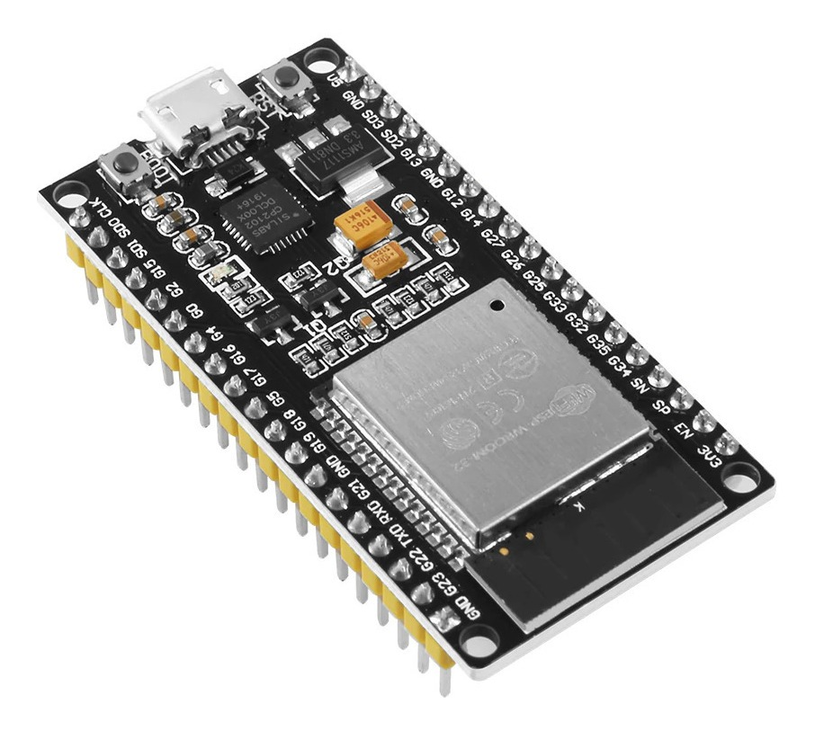
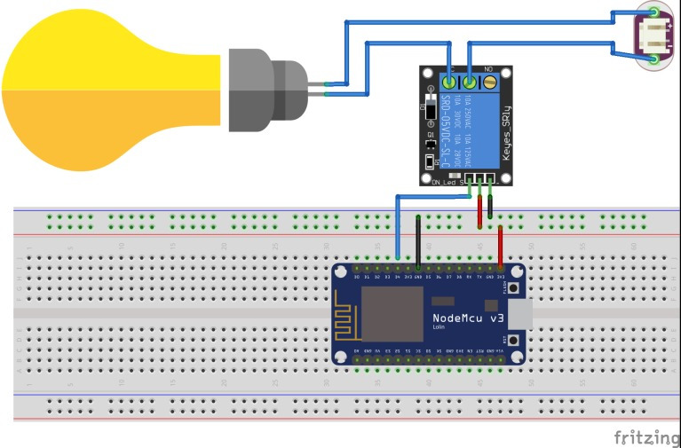

Ini adalah halaman esp32.
ESP32 adalah sebuah chip system on a chip (SoC) yang terintegrasi dengan Wi-Fi dan Bluetooth dual-mode. ESP32 dibangun oleh Espressif Systems dan dirancang untuk mencapai kinerja terbaik dalam penggunaan yang efisien dan kekuatan frekuensi.
Keunggulan ESP32:
Kemampuan Komunikasi: ESP32 memiliki WiFi yang kuat dan mendukung berbagai protokol jaringan, sehingga cocok untuk aplikasi IoT yang memerlukan konektivitas internet.
Kemampuan Bluetooth: Selain WiFi, ESP32 juga memiliki kemampuan Bluetooth yang memungkinkan interaksi dengan perangkat-perangkat Bluetooth lainnya.
Kinerja: Dengan dual-core processor dan kecepatan clock yang tinggi, ESP32 mampu menangani aplikasi yang lebih kompleks dengan responsif.
Ketersediaan Periferal: Berbagai interface periferal yang disediakan memudahkan penggunaan sensor-sensor dan perangkat eksternal lainnya.
Harga Terjangkau: Meskipun memiliki fitur yang canggih, ESP32 umumnya tersedia dengan harga yang terjangkau, membuatnya populer di kalangan pengembang.
Berikut adalah gambaran komponen ESP32

Berikut adalah tabel ESP32
| Gambar | Spesifikasi |
|---|---|
|
Berikut adalah contoh project sederhana menggunakan ESP32
